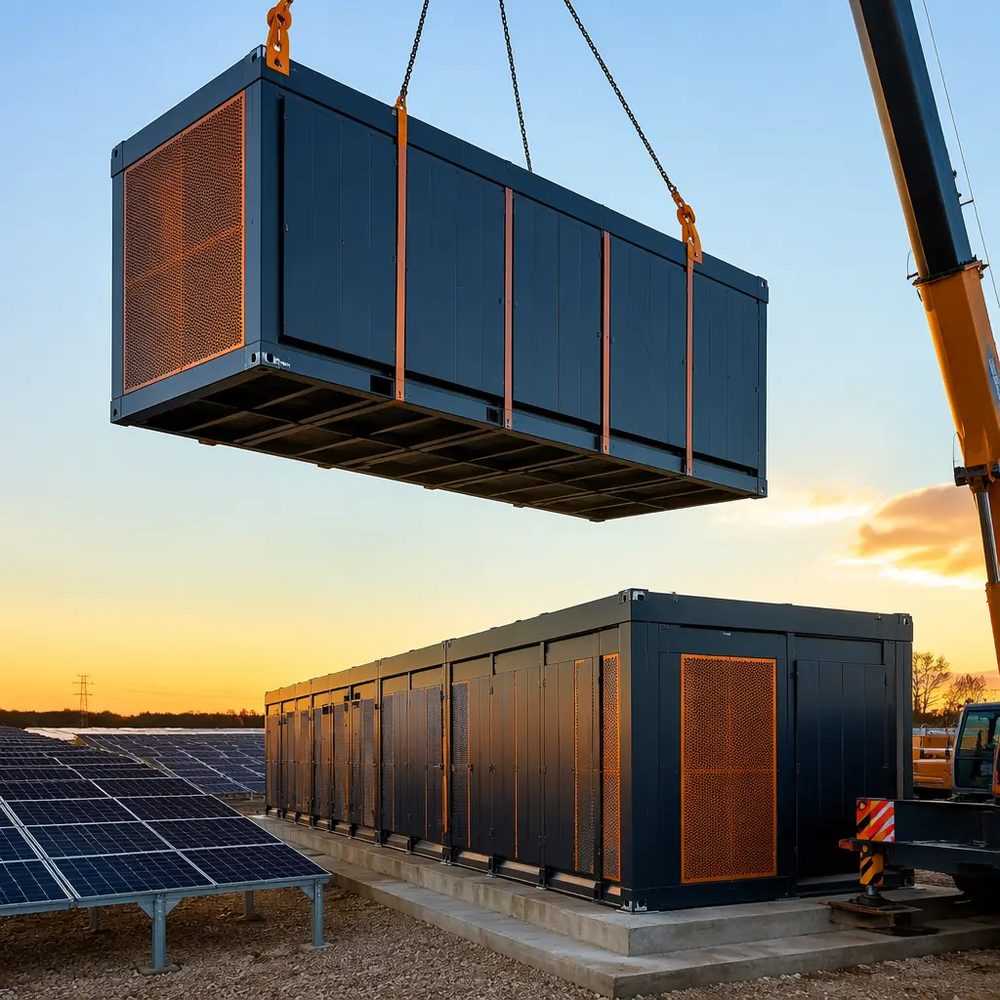
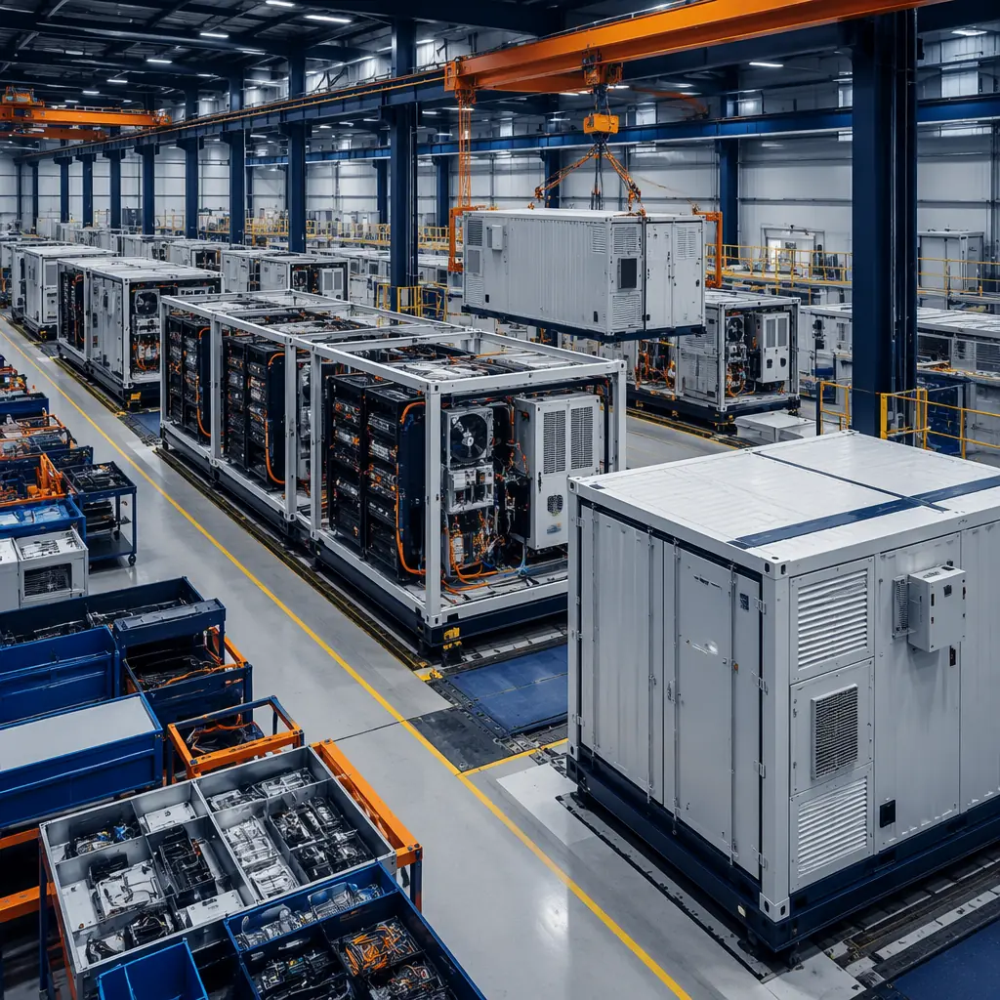
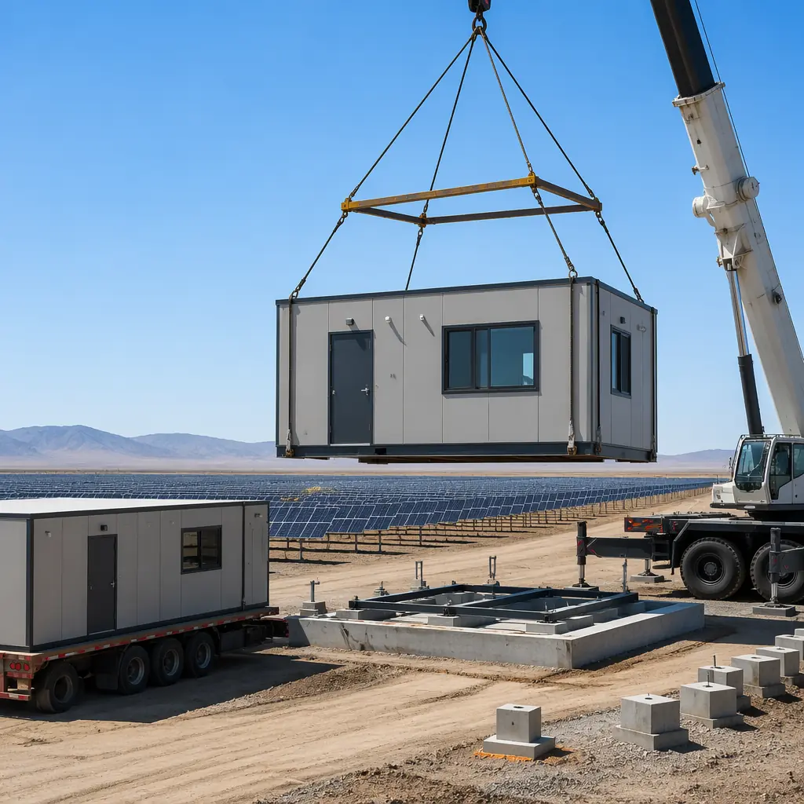

Utility-scale solar deployment in the United States added 32 GW of new capacity in 2025, and the global battery energy storage system (BESS) market is projected to reach $31 billion by 2030 — growing at a 24% CAGR. Behind every gigawatt of solar generation and every megawatt-hour of grid-scale storage sits a network of physical infrastructure: inverter stations converting DC to AC, medium-voltage transformer enclosures stepping power to transmission voltage, control rooms housing SCADA and protection relays, and BESS enclosures containing racks of lithium-ion cells with their associated thermal management and fire suppression systems. For project developers facing interconnection queue delays, equipment lead times, and construction labor shortages, the question is no longer whether to build these balance-of-plant structures — it is how to build them fast enough to meet commercial operation dates (CODs) that power purchase agreements have locked in. Modular prefabricated enclosures, factory-built and site-delivered as complete units, are becoming the default procurement strategy for solar and storage developers who recognize that every week of delayed COD is a week of lost revenue at contracted PPA rates.

Why Renewable Energy Developers Are Adopting Modular for Balance-of-Plant Buildings
Solar farm construction follows a compressed schedule dictated by interconnection agreements and tax credit eligibility windows. The panels, racking, and inverters are production-line items with predictable lead times. The buildings — inverter stations, control houses, BESS enclosures — have historically been the schedule bottleneck. A site-built 500 sq ft control house requires foundation work, framing, MEP rough-in, equipment mounting, and commissioning testing that typically consumes 14–18 weeks of the critical path. A modular equivalent arrives on site with the control panels pre-mounted, conduit pre-run to terminal blocks, HVAC commissioned at the factory, and foundation bolts torqued to specification — reducing site work to a 2–3 week installation and commissioning window.
Three structural shifts in the renewable energy market are accelerating modular adoption. First, project scale is compounding: the median utility-scale solar project now exceeds 200 MW, requiring 10–20 inverter stations and multiple control buildings. At that scale, the productivity difference between factory assembly and field construction — where every building repeats the same design — becomes a genuine competitive advantage. Second, BESS co-location is now standard: over 70% of new utility-scale solar projects filed in interconnection queues in 2025 included battery storage, which adds BESS enclosures, DC collection buildings, and thermal management infrastructure that modular methods deliver with factory-integrated fire suppression and HVAC. Third, construction labor availability in remote project locations — the Imperial Valley, West Texas, the Mojave — is severely constrained. Modular shifts 70–80% of construction labor hours from the project site to the factory, where a stable workforce operates under controlled conditions. Our cost analysis details the labor economics of modular versus site-built across project scales.

Engineering Requirements: Thermal Management, Fire Suppression, and Weatherproofing
BESS enclosures impose engineering demands that distinguish them from standard industrial buildings. The core challenge is thermal management For a deeper look, our modular workforce housing — rapid deplo… guide covers the details.: lithium-ion battery cells degrade rapidly when operated outside the 15–35°C range, and thermal runaway — a self-accelerating exothermic reaction — can initiate at cell temperatures above 80°C. Modular BESS enclosures must maintain cell-operating temperatures within a ±2°C band across every rack position, requiring computational fluid dynamics (CFD) modeling of airflow patterns during the enclosure design phase, not as an afterthought. Factory-built enclosures incorporate HVAC systems sized for the battery racks' heat rejection rate (typically 2–4% of rated power output as heat), with N+1 redundancy on cooling circuits and ductwork designed to eliminate hot spots at end-of-row positions where airflow is weakest. This thermal design is completed once in the factory and validated through commissioning tests before the enclosure ships — eliminating the field HVAC commissioning variability that creates hot spots in site-built BESS buildings.
Fire suppression under NFPA 855 — the Standard for the Installation of Stationary Energy Storage Systems — is the most stringent regulatory requirement for BESS enclosures. NFPA 855 mandates explosion prevention systems (deflagration venting per NFPA 68), gas detection (hydrogen and carbon monoxide monitoring at multiple elevations, since off-gassing products stratify by density), and suppression systems capable of controlling a battery fire without causing cascading cell failures from thermal shock. Modular enclosures are factory-equipped with integrated fire suppression: aerosol-based systems (Stat-X or FirePro) for the battery compartments, VESDA aspirating smoke detection for incipient fire warning, and explosion vent panels sized to NFPA 68 calculations verified during factory acceptance testing. Fire safety in modular construction covers suppression system selection and compliance documentation pathways relevant to BESS applications.
Weatherproofing is the third engineering pillar. Solar farms operate in environments selected for high solar irradiance — deserts, arid plains, high-altitude plateaus — where ambient temperatures swing 30°C diurnally, dust and sand penetrate standard enclosure seals, and corrosion from alkaline soils attacks exposed steel. Modular enclosures for these environments incorporate NEMA 4X-rated stainless steel exterior panels, gasketed door seals with compression-latch mechanisms, and positive-pressure HVAC filtration that maintains a clean interior environment regardless of external dust loading. Roof designs include integrated cable tray supports and walkway systems so that DC collection cables enter through weatherproofed roof penetrations rather than wall penetrations, eliminating the most common water ingress pathway in field-built enclosures. Energy-efficient enclosure design applies directly to solar farm buildings where auxiliary power consumption — the energy used to cool and operate the enclosure itself — directly reduces net energy delivered to the grid.

Modular vs. Site-Built: Control Rooms, Inverter Stations, and BESS Enclosures
The comparison between modular and site-built approaches for solar farm balance-of-plant buildings plays out differently across the three primary building types:
| Building Type | Site-Built Timeline | Modular Timeline | Key Modular Advantage |
|---|---|---|---|
| Control House (SCADA/Protection) | 16–20 weeks | 3–4 weeks | Relay panels pre-mounted and wired to terminal blocks; factory point-to-point testing before shipment; HVAC and UPS commissioned at factory |
| Inverter Station Enclosure | 12–16 weeks | 2–3 weeks | Inverter skids pre-installed on vibration-isolated pads; DC/AC cable entry points factory-sealed; cooling airflow paths validated at factory |
| BESS Enclosure (per MW) | 14–18 weeks | 2–3 weeks | Battery racks pre-loaded; fire suppression and gas detection integrated and tested; thermal management CFD-validated at factory acceptance |
| Medium-Voltage Transformer Enclosure | 10–14 weeks | 1–2 weeks | Transformer pre-set on isolated foundation within enclosure; oil containment integrated; bushing connections factory torque-verified |
| O&M Building | 20–26 weeks | 4–6 weeks | Office, workshop, and spare parts storage delivered as complete building; MEP fully operational on delivery |
For a 300 MW solar farm with 200 MW / 800 MWh of co-located BESS, the cumulative site construction time saved by using modular enclosures for all balance-of-plant buildings typically ranges from 12 to 16 weeks — compressing the total project construction schedule by approximately 20–25%. At PPA rates of $25–40/MWh, every week of accelerated COD represents $400,000–$650,000 in additional revenue for a project of this scale. Industrial enclosure construction shares engineering approaches with solar farm buildings, particularly for cable management and environmental sealing. Data center modular construction provides a parallel for the power-dense, thermally-managed enclosure requirements that BESS demands.
Timeline Advantages: How Factory-Built Enclosures Compress Solar Farm Schedules
The schedule compression that modular delivers to solar farm construction is not a function of faster building assembly — it is a function of parallelizing workstreams that site-built construction must sequence. In a conventional solar farm project, the control house construction cannot begin until the substation pad is graded and foundation concrete has cured (2–3 weeks minimum). MEP rough-in cannot begin until the building envelope is weathertight. Relay panel installation and wiring cannot begin until MEP is complete. This serial dependency chain — site prep → foundation → framing → envelope → MEP → equipment → commissioning — drives the 16–20 week control house timeline.
In the modular approach, the control house module is being assembled, wired, and commissioned at the factory during the same weeks that site grading and foundation work proceed. The module arrives on site with relay panels pre-installed, wiring terminated to factory-labeled terminal blocks, HVAC commissioned, and fire alarm system tested — requiring only foundation anchoring, inter-module connections (for multi-module buildings), utility tie-ins, and final commissioning verification. This parallelization is not a marginal improvement; it fundamentally restructures the project critical path, removing the balance-of-plant buildings from the construction duration entirely and leaving only the site utility connections as on-site building work. For projects in interconnection queues where delay penalties accrue at $5,000–$25,000 per day past the guaranteed COD, this schedule certainty has direct financial value. Our structural warranty coverage provides additional schedule risk mitigation through factory quality assurance.
![Interior of factory-completed modular BESS enclosure showing battery rack installation, rows of lithium-ion battery modules mounted in steel racking with integrated cable management, HVAC ductwork running along ceiling with supply diffusers positioned between rack aisles, fire suppression aerosol units mounted on walls, gas detection sensors at multiple elevations, LED lighting, cable trays carrying DC collection wiring to inverter connection points, clean organized industrial electrical enclosure interior](../generated/solar-bess-modular-interior.webp)
Compliance: UL 9540, NFPA 855, and IEEE 1547 Interconnection Standards
BESS enclosures must satisfy a compliance framework that spans fire safety, electrical safety, and grid interconnection standards — and the responsibility for demonstrating compliance falls on the project developer, not the equipment supplier. Modular construction addresses this by delivering enclosures with factory-documented compliance evidence across the three critical standards:
- UL 9540: Energy Storage Systems and Equipment. UL 9540 covers the integrated energy storage system — battery modules, inverters, thermal management, fire suppression, and controls — not just individual components. The 2023 edition introduced large-scale fire testing per UL 9540A that evaluates thermal runaway propagation at module, unit, and installation levels. Modular BESS enclosures integrating UL 9540-listed battery racks, UL 1741-listed inverters, and factory-tested fire suppression can achieve complete ESS unit listing under UL 9540 — eliminating the field integration risk where individually listed components are assembled on site without system-level testing, the source of multiple BESS fire incidents.
- NFPA 855: Standard for the Installation of Stationary Energy Storage Systems. NFPA 855 governs how BESS units are installed. Key requirements: maximum stored energy per fire area (600 kWh for lithium-ion unless mitigated by large-scale fire testing), minimum 3 ft separation between ESS units (extendable based on UL 9540A test data), explosion control via deflagration venting per NFPA 68, and gas detection with automatic ventilation initiation. Modular enclosures are factory-equipped with explosion vent panels sized during assembly, gas detection sensors positioned to the enclosure's internal geometry, and separation distances engineered into the footprint. The factory delivers an NFPA 855 compliance package — deflagration vent calculations, gas detection commissioning reports, and UL 9540A test data — that the AHJ can review without field verification of every installation.
- IEEE 1547-2018: Standard for Interconnection and Interoperability of Distributed Energy Resources. IEEE 1547 governs how solar and storage systems connect to the electric grid, including voltage and frequency ride-through requirements, power quality limits, and communications protocols for utility control. Modular control houses for solar farms are factory-equipped with the protection relays, SCADA RTUs, and communications equipment required for IEEE 1547 compliance, with all inter-device wiring completed and tested before shipment. The factory performs point-to-point wiring verification and relay configuration checks that, in a site-built control house, would require weeks of field commissioning by specialized protection and control technicians — a resource that is scarce in every solar construction market.
- UL 1741 and NEC Article 690/706. Inverters and power conversion systems (PCS) within modular enclosures must be UL 1741-listed for grid-interactive operation. Modular inverter station enclosures are factory-wired with DC input circuits from the solar array and AC output circuits to the medium-voltage transformer, with all terminations torque-verified and documented. NEC Article 690 (Solar Photovoltaic Systems) and Article 706 (Energy Storage Systems) requirements for working clearances, disconnect locations, and signage are verified during factory quality control inspection — eliminating the field inspection findings that delay site-built enclosure commissioning.
The compliance documentation package — UL 9540 system listing, NFPA 855 compliance report, IEEE 1547 protection coordination study, and factory test records — directly supports interconnection agreements and permitting. For developers managing projects across multiple AHJs with varying BESS expertise, the consistency of factory-documented compliance reduces the engineering and legal costs of local permitting. Net-zero energy building design extends naturally to solar farm O&M buildings that can incorporate rooftop PV and battery storage for self-consumption, reducing auxiliary load that subtracts from net generation output.
The global BESS market installed 170 GWh of new capacity in 2025, and the pipeline for 2026–2028 exceeds 500 GWh. At an average of 2–4 MWh per enclosure, that is 125,000–250,000 BESS enclosures that need to be manufactured, tested, and deployed in the next three years. Modular factory production — with standardized enclosure designs, repeatable quality processes, and documented compliance packages — is the only delivery model that can scale to meet this demand without sacrificing the safety and reliability that utility-scale energy storage demands.
Designing for the Full Project Lifecycle
Solar farms operate under 25–35 year PPAs, and balance-of-plant buildings must match that lifespan. Modular enclosures are engineered for lifecycle durability: hot-dip galvanized steel frames (ASTM A123/A123M, 3.9 mil minimum coating for C4 corrosion environments), standing-seam metal roofing with 30-year warranties, and enclosure designs that accommodate battery rack replacement cycles in years 10–15 — access door sizing, interior clearance, and cable tray routing are engineered for equipment swap-outs that the enclosure will outlast. Cold storage construction shares the thermal envelope engineering that BESS enclosure design demands, particularly in extreme ambient environments where cooling performance determines battery degradation rates and project returns. The decision framework for developers is straightforward: compare factory-documented quality control against the field construction quality achievable at the project's specific location and labor market. In nearly every utility-scale renewable energy market in 2026, that comparison favors modular — not because modular is inherently superior, but because the consistency, documentation, and schedule certainty that factory production delivers are what solar and storage developers need most urgently.